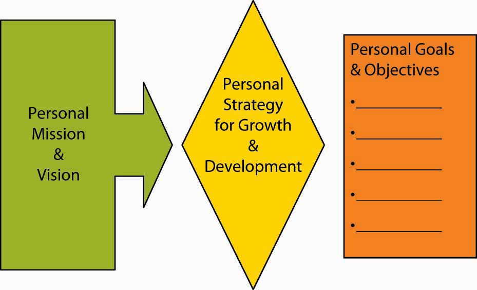

This section introduces you to the strategy diamond, a tool that will help you understand how clearly and completely you have crafted a strategy. The diamond relates to both business and corporate strategy, and regardless of whether you are a proponent of design or emergent schools of strategizing, it provides you with a good checklist of what your strategy should cover. The section concludes by walking you through the application of the strategy diamond to the task of developing your personal strategy.
All organizations have strategies. The real question for a business is not whether it has a strategy but rather whether its strategy is effective or ineffective, and whether the elements of the strategy are chosen by managers, luck, or by default. You have probably heard the saying, “luck is a matter of being in the right place at the right time”—well, the key to making sure you are in the right place at the right time is preparation, and in many ways, strategizing provides that type of preparation. Luck is not a bad thing. The challenge is to recognize luck when you see it, capitalize on luck, and put the organization repeatedly in luck’s path.
The strategy diamondA framework comprising five facets for understanding the content of a strategy; the facets are arenas, differentiators, vehicles, staging and pacing, and economic logic. was developed by strategy researchers Don Hambrick and Jim Fredrickson as a framework for checking and communicating a strategy.Hambrick, D. C., & Fredrickson, J. W. (2001). Are you sure you have a strategy? Academy of Management Executive, 19(4), 51–62. You have already learned in this chapter about the need for focus and choice with strategy, but you might also have noticed that generic strategies and value disciplines do not spell out a strategy’s ingredients. In critiquing the field of strategy, these researchers noted that “after more than 30 years of hard thinking about strategy, consultants and scholars have provided executives with an abundance of frameworks for analyzing strategic situations.…Missing, however, has been any guidance as to what the product of these tools should be—or what actually constitutes a strategy.”Hambrick, D. C., & Fredrickson, J. W. (2001). Are you sure you have a strategy? Academy of Management Executive, 19(4), 51–62, esp. p. 53.
Figure 5.20 The Strategy Diamond

Adapted from Hambrick, D. C., & Fredrickson, J. W. (2001). Are you sure you have a strategy? Academy of Management Executive, 19 (4), 51–62.
Because of their critique and analysis, they concluded that if an organization must have a strategy, then the strategy must necessarily have parts. The figure summarizes the parts of their diamond model, its facets, and some examples of the different ways that you can think about each facet. The diamond model does not presuppose that any particular theory should dictate the contents of each facet. Instead, a strategy consists of an integrated set of choices, but it isn’t a catchall for every important choice a manager faces. In this section, we will tell you a bit about each facet, addressing first the traditional strategy facets of arenas, differentiators, and economic logic; then we will discuss vehicles and finally the staging and pacing facet.
We refer to the first three facets of the strategy diamond—arenas, differentiators, and economic logic—as traditional in the sense that they address three longstanding hallmarks of strategizing. Specifically, strategy matches up market needs and opportunities (located in arenas) with unique features of the firm (shown by its differentiators) to yield positive performance (economic logic). While performance is typically viewed in financial terms, it can have social or environmental components as well.
Let’s start with arenas. Answers to strategy questions about arenas tell managers and employees where the firm will be active. For instance, Nike is headquartered in Washington County, on the outskirts of Beaverton, Oregon. Today, Nike’s geographic market arenas are most major markets around the globe, but in the early 1960s, Nike’s arenas were limited to Pacific Northwest track meets accessible by founder Phil Knight’s car. In terms of product markets (another part of where), the young Nike company (previously Blue Ribbon Sports) sold only track shoes and not even shoes it manufactured.
Beyond geographic-market and product-market arenas, an organization can also make choices about the value-chain arenas in its strategy. To emphasize the choice part of this value-chain arena, Nike’s competitor New Balance manufactures nearly all the athletic shoes that it sells in the United States. Thus, these two sports-shoe companies compete in similar geographic- and product-market arenas but differ greatly in terms of their choice of value-chain arenas.
What about differentiators? Differentiators are the things that are supposedly unique to the firm such that they give it a competitive advantage in its current and future arenas. A differentiator could be asset based, that is, it could be something related to an organization’s tangible or intangible assets. A tangible assetAn asset that has a value and physically exists. has a value and physically exists. Land, machines, equipment, automobiles, and even currencies, are examples of tangible assets. For instance, the oceanfront land on California’s Monterey Peninsula, where the Pebble Beach Golf Course and Resort is located, is a differentiator for it in the premium golf-course market. An intangible assetAn asset that cannot be physically touched, or is not physical in nature. is a nonphysical resource that provides gainful advantages in the marketplace. Brands, copyrights, software, logos, patents, goodwill, and other intangible factors afford name recognition for products and services. Obviously, the Nike brand has become a valuable intangible asset because of the broad awareness and reputation for quality and high performance that it has built. Differentiators can also be found in capabilities, that is, how the organization does something. Wal-Mart, for instance, is very good at keeping its costs low. Nike, in contrast, focuses on developing leading-edge, high-performance athletic performance technologies, as well as up-to-the-minute fashion in active sportswear.
The third facet of the strategy diamond in this traditional view is economic logic, which explains how the firm makes money. Economic logic tells us how profits will be generated above the firm’s cost of capital. The collapse in the late 1990s of stock market valuations for Internet companies lacking in profits—or any prospect of profits—marked a return to economic reality. Profits above the firm’s cost of capital are required to yield sustained or longer-term shareholder returns. While the economic logic can include environmental and social profits (benefits reaped by society), the strategy must earn enough financial profits to keep investors (owners, tax payers, governments, and so on) willing to continue to fund the organization’s costs of doing business. A firm performs well (i.e., has a strong, positive economic logic) when its differentiators are well aligned with its chosen arenas.
You can see why the first three facets of the strategy diamond—arenas, differentiators, and economic logic—might be considered the traditional facets of strategizing in that they cover the basics: (1) external environment, (2) internal organizational characteristics, and (3) some fit between them that has positive performance consequences. The fourth facet of the strategy diamond is called vehicles. If arenas and differentiators show where you want to go, then vehicles communicate how the strategy will get you there.
Specifically, vehicles refer to how you might pursue a new arena through internal means, through help from a new partner or some other outside source, or even through acquisition. In the context of vehicles, this is where you determine whether your organization is going to grow organically, acquisitively, or through a combination of both. Organic growth is the growth rate of a company excluding any growth from takeovers, acquisitions, or mergers. Acquisitive growth, in contrast, refers precisely to any growth from takeovers, acquisitions, or mergers. Augmenting either organic or acquisitive growth is growth through partnerships with other organizations. Sometimes such partnership-based growth is referred to as co-opetition, because an organization cooperates with others, even some competitors, in order to compete and grow.
Vehicles are considered part of the strategy because there are different skills and competencies associated with different vehicles. For instance, acquisitions fuel rapid growth, but they are challenging to negotiate and put into place. Similarly, alliances are a great way to spread the risk and let each partner focus on what it does best. But at the same time, to grow through alliances also means that you must be really good at managing relationships in which you are dependent on another organization over which you do not have direct control. Organic growth, particularly for firms that have grown primarily through partnering or acquisition, has its own distinct challenges, such as the fact that the organization is on its own to put together everything it needs to fuel its growth.
Staging and pacing constitute the the fifth and final facet of the strategy diamond. Staging and pacing reflect the sequence and speed of strategic moves. This powerful facet of strategizing helps you think about timing and next steps, instead of creating a strategy that is a static, monolithic plan. As an example, the managers of Chuy’s, a chain of Austin, Texas-based Tex-Mex restaurants, wanted to grow the business outside of Austin, but at the same time, they knew it would be hard to manage these restaurants that were farther away. How should they identify in which cities to experiment with new outlets? Their creative solution was to choose cities that were connected to Austin by Southwest Airlines. Since Southwest is inexpensive and its point-to-point system means that cities are never much more than an hour apart, the Austin managers could easily and regularly visit their new ventures out of town. Remember, strategizing is about making choices, and sequencing and speed should be key choices along with the other facets of the strategy. The staging and pacing facet also helps to reconcile the designed and emergent portions of your strategy.
The strategy diamond is a useful professional and personal tool for managers. How might it benefit them personally? Well, in the same way it can benefit you—the following figure maps out how your strategy fits in the planning aspect of P-O-L-C. Remember that, like in P-O-L-C, your personal strategy should be guided by your own mission and vision. Let’s look at how you might apply the strategy diamond to your personal growth and development objectives.
Figure 5.21 Planning and Your Personal Growth and Development Strategy
Your arenas and differentiators will answer such personal growth and development questions as:
Your personal arenas can be an activity you want to do, a specific job, or simply a geographic location. For instance, do you want to be a store manager, an accountant, an entrepreneur, or a CEO? Or do you want to live in a certain locale? For instance, I will do anything just as long as I can live in Paris! It can also be a combination of several. For example, perhaps you want to be a software designer for Google and live in San Francisco.
The more specific you are about the arenas in your strategy, the better you will be able to plot out the other facets. Going back to our Google example, your personal differentiators would likely have to include the demonstration of excellence in software design and an affinity for the Google corporate culture. More broadly, the differentiators facet of your personal strategy should map on to your arenas facet—that is, they should clearly fit together. Also, recognize too that your differentiators are subject to VRIO, in that where your capabilities are valuable and rare, you may be more likely to economically benefit from them with employers (this foreshadows the link between personal differentiators and personal economic logic).
The personal vehicles facet of your strategy answers questions such as:
We often think that our careers and quality of life are up to us—will be based on our choices and actions alone. If that is your belief (i.e., you are a rugged individualist), then your personal growth and development strategy seems to be highly dependent on what you do but not on the contributions of others.
It is true that we have to develop our own knowledge and capabilities to move forward. However, in reality, we also typically get most things done through and with others. You have friends and family outside of work and colleagues, employees, and bosses at work.
The vehicles component of your personal strategy diamond should spell out how your growth and development is a function of what you do (when we talk about organizations, we refer to this as organic growth), and what you depend on others to do. The better you understand your dependence on others, the better you will likely be able to manage those relationships.
You can think of personal staging and pacing as the implications of your strategy for your own Outlook calendar. Personal staging and pacing answers questions like:
For instance, if you want to be a manager of a retail store it is likely you might need a related college degree and experience. Your personal staging and pacing would answer questions about how you would achieve these, the financial implications of each, as well as their timing.
Finally, your personal growth and development strategy will likely have an economic logic. Personal economic logic answers questions such as:
We can see this most clearly when magazines publish lists of high-demand jobs. When employees have skills that are in high demand by employers, the price of those skills in the form of paycheck, is usually bid up in the market. For organizations, economic logic is typically viewed in terms of financial performance. However, increasingly, firms target social and environmental performance as well—similarly, the economic logic of your strategy can have implications for what you do to improve social and environmental conditions. This can happen directly through your volunteer hours or indirectly through your financial support of causes you believe in.
In this section, we discussed how to put together a strategy diamond. The first step involves identifying the organization’s arenas, differentiators, and economic logic. This step involves a basic understanding of strategy and summarizes many of the traditional views in strategic management. The second step involves contemplating how the organization would compete or grow in existing or new arenas, and this is where the vehicles came into play. Finally, you considered the sequencing and speed of strategic initiatives by learning about the strategy diamond facet of staging and pacing. Together, these five facets (i.e., arenas, differentiators, economic logic, vehicles, staging, and pacing) constitute the strategy diamond. We concluded the chapter with an application of the strategy diamond to your personal situation.